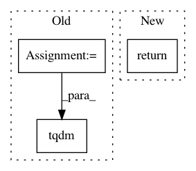

428615e74edc5106af1c472f7fa07b3d2338acf9,scanpy/datasets/__init__.py,,visium_sge,#Any#,302
Before Change
// setting filenames, tarfilenames, backup_urls
// tarfilenames and backup_urls will be used for downloading data base
files = dict(
counts=settings.datasetdir / f"{sample_id}_filtered_feature_bc_matrix.h5",
tissue_positions_file=settings.datasetdir / "spatial/tissue_positions_list.csv",
scalefactors_json_file=settings.datasetdir / "spatial/scalefactors_json.json",
hires_image=settings.datasetdir / "spatial/tissue_hires_image.png",
lowres_image=settings.datasetdir / "spatial/tissue_lowres_image.png",
)
tarfiles = dict(
tissue_positions_file=settings.datasetdir / f"{sample_id}_spatial.tar",
scalefactors_json_file=settings.datasetdir / f"{sample_id}_spatial.tar",
hires_image=settings.datasetdir / f"{sample_id}_spatial.tar",
lowres_image=settings.datasetdir / f"{sample_id}_spatial.tar",
)
url_prefix = (
f"http://cf.10xgenomics.com/samples/spatial-exp/1.0.0/{sample_id}/{sample_id}"
)
backup_urls = dict(
counts=f"{url_prefix}_filtered_feature_bc_matrix.h5",
tissue_positions_file=f"{url_prefix}_spatial.tar.gz",
scalefactors_json_file=f"{url_prefix}_spatial.tar.gz",
hires_image=f"{url_prefix}_spatial.tar.gz",
lowres_image=f"{url_prefix}_spatial.tar.gz",
)
// download and untar files if necessary
for f in tqdm(files, desc="Files"):
if f in tarfiles:
_utils.check_presence_download_untar(
filename=files[f], tarfilename=tarfiles[f], backup_url=backup_urls[f]
After Change
Annotated data matrix.
_download_visium_dataset(sample_id)
return read_visium(settings.datasetdir / sample_id)
In pattern: SUPERPATTERN
Frequency: 3
Non-data size: 3
Instances
Project Name: theislab/scanpy
Commit Name: 428615e74edc5106af1c472f7fa07b3d2338acf9
Time: 2020-03-10
Author: ivirshup@gmail.com
File Name: scanpy/datasets/__init__.py
Class Name:
Method Name: visium_sge
Project Name: A2Zadeh/CMU-MultimodalSDK
Commit Name: d66ae4b426097cfb3957eb76873f7b6f59d9ffff
Time: 2020-07-07
Author: abagherz@cs.cmu.edu
File Name: mmsdk/mmdatasdk/log/log.py
Class Name:
Method Name: progress_bar
Project Name: mozilla/bugbug
Commit Name: f84945f86fe9b406829381b31f1197b8d8236f5a
Time: 2020-10-26
Author: mcastelluccio@mozilla.com
File Name: bugbug/phabricator.py
Class Name:
Method Name: get